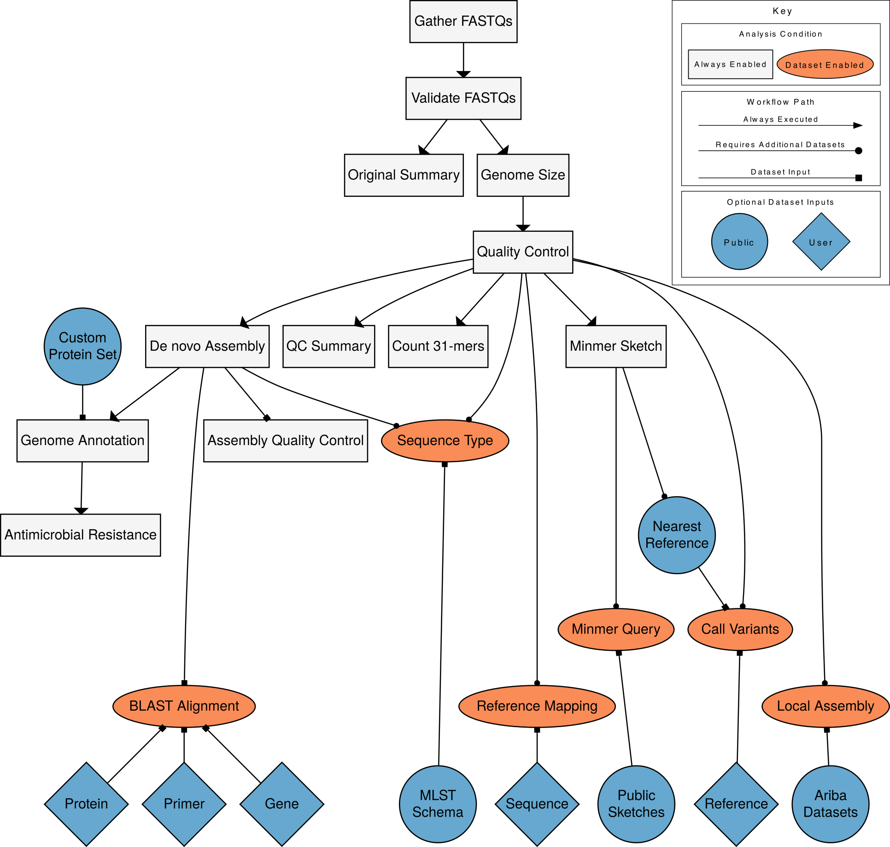

Workflow Overview¶
Bactopia is an extensive workflow integrating numerous steps in bacterial genome analysis. Through out the workflow there are steps that are always enabled and dataset enabled. Each of the steps depicted in the image below are described in this section.
A list of software directly used in each step is also listed. Please check out the Acknowledgements section to get the full list of software as well how to download and cite said software.

Always Enabled Steps¶
The Always Enabled Steps are always executed by Bactopia. These steps do not depend of external datasets and thus are always enabled.
Gather FASTQs¶
Specifies exactly where the input FASTQ/FASTAs are coming from. If you are using local inputs (e.g. --R1/--R2, --fastqs) it will verify they can be accessed.
If an accession(s) (--accession or --accessions) was given, the corresponding FASTQs (SRA/ENA) or assemblies (NCBI Assembly) are downloaded in this step. All assemblies will have 2x250bp Illumina reads simulated withour insertions or deletions and a minimum PHRED score of Q33.
| Software | Usage |
|---|---|
| ART | Generate simulated Illumina reads from an assembly |
| ena-dl | Download FASTQ files from ENA |
| ncbi-genome-download | Download GenBank/RefSeq assemblies from NCBI Assembly database |
Validate FASTQs¶
Determines if the FASTQ file contains enough sequencing to continue processing. The --min_reads and --min_basepairs parameters adjust the minimum amount of sequencing required to continue processing. This step does not directly test the validity of the FASTQ format (although, it would fail if the format is invalid!).
| Software | Usage |
|---|---|
| fastq-scan | Determine total read and basepairs of FASTQ |
Original Summary¶
Produces summary statistics (read lengths, quality scores, etc...) based on the original input FASTQs.
| Software | Usage |
|---|---|
| FastQC | Generates a HTML report of original FASTQ summary statistics |
| fastq-scan | Generates original FASTQ summary statistics in JSON format |
Genome Size¶
The genome size is by various programs in the Bactopia workflow. By default, if no genome size is given one is estimated using Mash. Otherwise, a specific genome size can be specified or completely disabled using the --genome_size parameter. See Genome Size Parameter to learn more about specifying the genome size.
| Software | Usage |
|---|---|
| Mash | If not given, estimates genome size of sample |
Quality Control¶
The input FASTQs go through a few clean up steps. First, Illumina related adapters and phiX contaminants are removed. Then reads that fail to pass length and/or quality requirements are filtered out. If the genome size is available, sequence error-corrections are made and the total sequencing is reduced to a specified coverage. After this step, all downstream analyses are based on the QC'd FASTQ and the original is no longer used.
| Software | Description |
|---|---|
| BBTools | Removes Illumina adapters, phiX contaminants, filters reads based on length and quality score, and reduces inputs to a specified coverage. |
| Lighter | Corrects sequencing errors |
QC Summary¶
Produces summary statistics (read lengths, quality scores, etc...) based on the final set of QC'd FASTQs.
| Software | Usage |
|---|---|
| FastQC | Generates a HTML report of QC'd FASTQ summary statistics |
| fastq-scan | Generates QC'd FASTQ summary statistics in JSON format |
Count 31-mers¶
All 31 basepair (31-mers) sequences are counted and the singletons (those 31-mers only counted once) are filtered out.
| Software | Description |
|---|---|
| McCortex | Counts 31-mers in the input FASTQ |
Minmer Sketch¶
A minmer sketch and signature is created based on the QC'd FASTQs for multiple values of k. If datasets are available, the sketches/signatures are used for further downstream analysis.
| Software | Usage |
|---|---|
| Mash | Produces a sketch (k=21,31) of tje QC'd FASTQ |
| Sourmash | Produces a signature (k=21,31,51) of the QC'd FASTQ |
De novo Assembly¶
The QC'd FASTQs are assembled using the Shovill pipeline. This allows for a seamless assembly process using MEGAHIT, SKESA, SPAdes or Velvet. Alternatively, if long reads are available to complement Illumina paired-end reads, hybrid assembly is available through Unicycler.
| Software | Usage |
|---|---|
| assembly-scan | Generates summary statistics of the final assembly |
| Shovill | Manages multiple steps in the Illumina assembly process |
| Unicycler | Manages multiple steps in the hybrid assembly process |
Assembly Quality Assessment¶
After assembly, the de novo assembly is assessed for its biological (e.g. containment & contamination) as well as its technical (e.g. misassemblies and errors) quality using CheckM and QUAST.
| Software | Usage |
|---|---|
| CheckM | Assess the biological quality of a de novo assembly based on presence of marker genes |
| QUAST | Gives a summary on the technical (e.g. misassemblies etc) quality of a de novo assembly |
Genome Annotation¶
Genes are predicted and annotated from the assembled genome using Prokka. If available, a clustered RefSeq protein set is used for the first pass of annotation.
| Software | Usage |
|---|---|
| Prokka | Predicts and annotates assembled genomes |
Antimicrobial Resistance¶
Searches for antimicrobial resistance genes and assosiated point mutations in the annotated gene and protein sequences. If datasets are available, local assemblies can also be used to predict antibiotic resistance.
| Software | Usage |
|---|---|
| AMRFinderPlus | Predicts antimicrobial resistance based on genes and point mutations |
Dataset Enabled Steps¶
The remaining Dataset Enabled Steps require supplemental datasets to be available to be executed. There are many datasets available that Bactopia can take advantage of. To learn more about setting up these datasets, check out Build Datasets. These datasets can be broken into two groups, Public Datasets and User Datasets.
Public Datasets¶
Publicly available datasets can be used for further analysis.
Call Variants (Auto)¶
Variants are predicted using Snippy. The QC'd FASTQs are aligned to the nearest (based on Mash distance) RefSeq completed genome. By default, only the nearest genome is selected, but multiple genomes can be selected (--max_references) or this feature can be completely disabled (disable_auto_variants).
| Software | Usage |
|---|---|
| Bedtools | Generates the per-base coverage of the reference alignment |
| NCBI Genome Download | Downloads the RefSeq completed genome |
| Snippy | Manages multiple steps in the haploid variant calling process |
| vcf-annotator | Adds annotations from reference GenBank to the final VCF |
Local Assembly¶
Using available Ariba reference datasets, determines which reference sequences were found with an additional detailed report summarizing the results.
| Software | Usage |
|---|---|
| Ariba | Creates local assemblies of reference sequences |
Minmer Query¶
Screens QC'd FASTQs and signatures against available Minmer Datasets.
| Software | Usage |
|---|---|
| Mash | Screens against RefSeq and/or PLSDB sketches |
| Sourmash | Screens signature against GenBank |
Sequence Type¶
Uses a PubMLST.org MLST schema to determine the sequence type of the sample.
| Software | Usage |
|---|---|
| Ariba | Runs QC'd FASTQ against a MLST database |
| BLAST | Aligns MLST loci against the assembled genome |
User Datasets¶
Another option is for users to provide their own data to include in the analysis.
BLAST Alignment¶
Each gene, protein, or primer sequence provided by the user is aligned against the assembled genome.
| Software | Usage |
|---|---|
| BLAST | Aligns reference sequences against the assembled genome |
Call Variants (User)¶
Uses the same procedure as Call Variants (Auto), except variants are called against each reference provided by the user.
| Software | Usage |
|---|---|
| Bedtools | Generates the per-base coverage of the reference alignment |
| Snippy | Manages multiple steps in the haploid variant calling process |
| vcf-annotator | Adds annotations from reference GenBank to the final VCF |
Reference Mapping¶
Aligns the QC'd FASTQs to each sequence provided by the user.
| Software | Usage |
|---|---|
| Bedtools | Generates the per-base coverage of the reference alignment |
| BWA | Aligns QC'd FASTQ to a reference sequence |
| Samtools | Converts alignment from SAM to BAM |